设计周刊 Design Weekly #44
📕 设计资源
Open Design
https://opendesign.avocode.com
设计文件的基础上构建和自动化任何东西。
将Sketch、Figma、Photoshop、Illustrator和XD设计文件转化为可读的JSON对象和资产，以读取、更改、转换和显示其设计数据。
轻松地将您的设计系统与代码连接起来，创建一个连续交付图像资产的渠道，或创建您自己的版本控制系统。
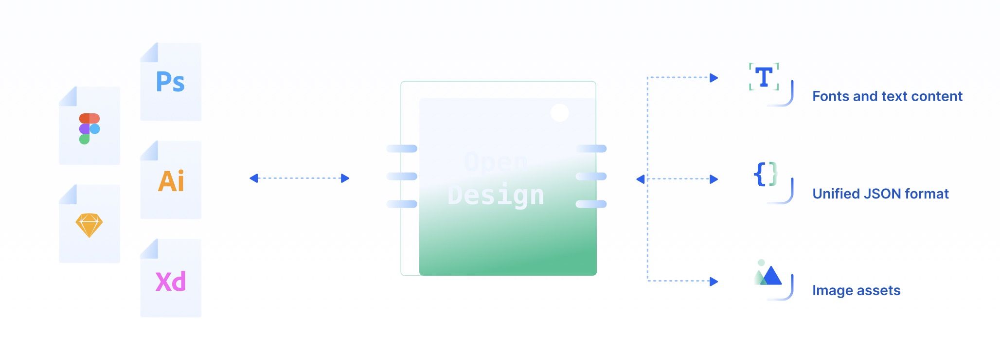
NB Charts for Figma
UI 设计师 Lee Xiang 制作的 Figma Chats 插件，使用真实数据进行的设计，易学易上手，包含线图、饼状图等多种类型供您选择。
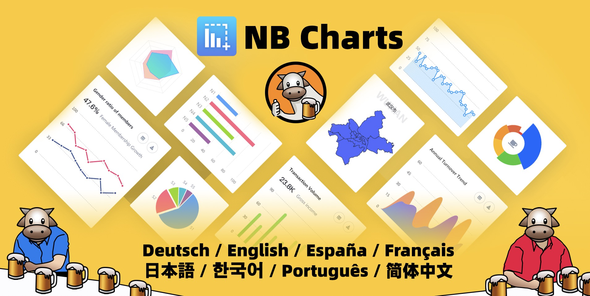
Flagpack
荷兰设计工作室 Yummygum 开源的260+开源旗帜图标，提供了设计源文件和开发工具包，太贴心了。
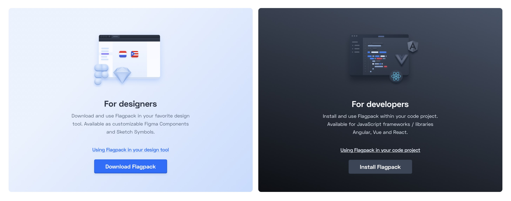
📗 设计文章
State of Design in 2021
https://www.abstract.design/state-of-design
今天的设计不再仅仅是看上去很酷的东西，设计必须实现商业成果。近期，Abstract 对 1000 名设计师进行了调研，询问了他们的工作内容、工作中的侧重点，以及面临的挑战。让我们一起看看都发现了什么？
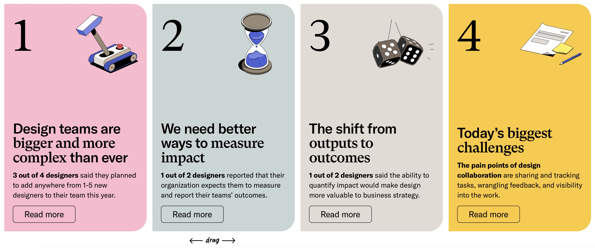
全面的UX设计方法和交付物清单
https://uxdesign.cc/a-comprehensive-list-of-ux-design-methods-deliverables-2021-2feb3e70e168
文中提供了服务设计、用户画像、竞品分析、头脑风暴、情绪板、KPI等一系列设计师在数字产品设计过程中最常需要的工具、方法和交付清单，各位请查收。
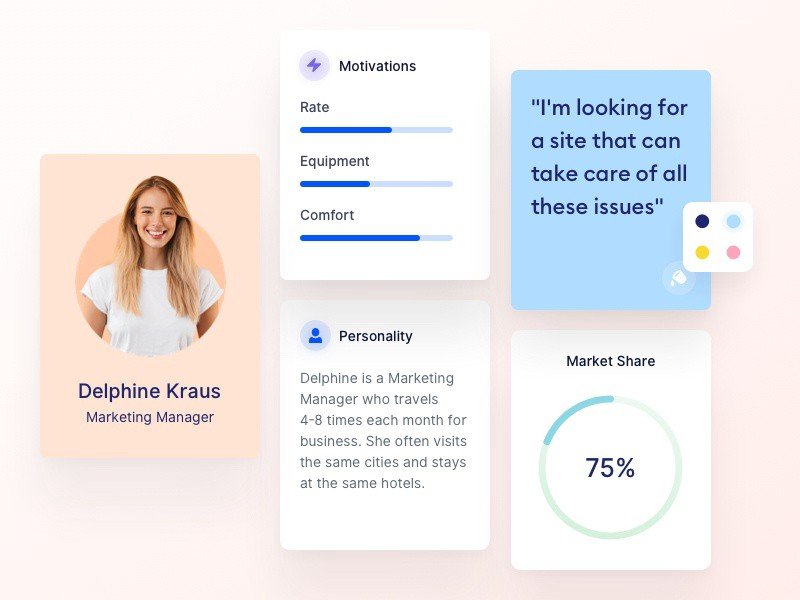
用户体验金字塔的顶端是什么？
https://medium.com/design-leadership-notebook/what-is-at-the-top-of-the-ux-pyramid-f9fc0c178803
用户体验设计最终可以变成什么？它可以提供比自身更大的价值么？
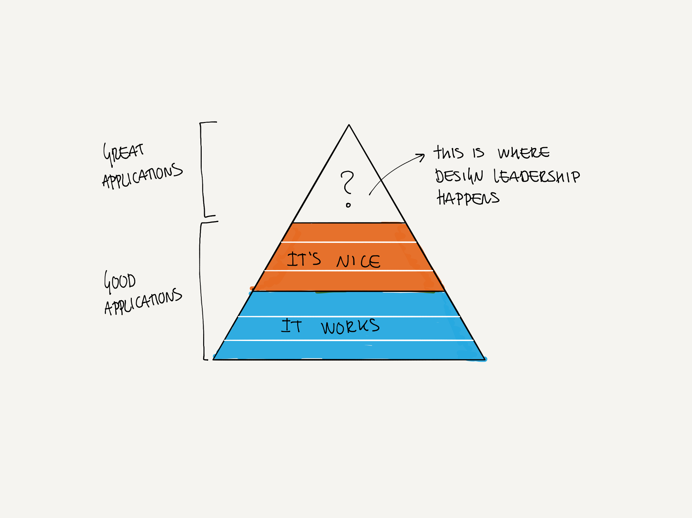
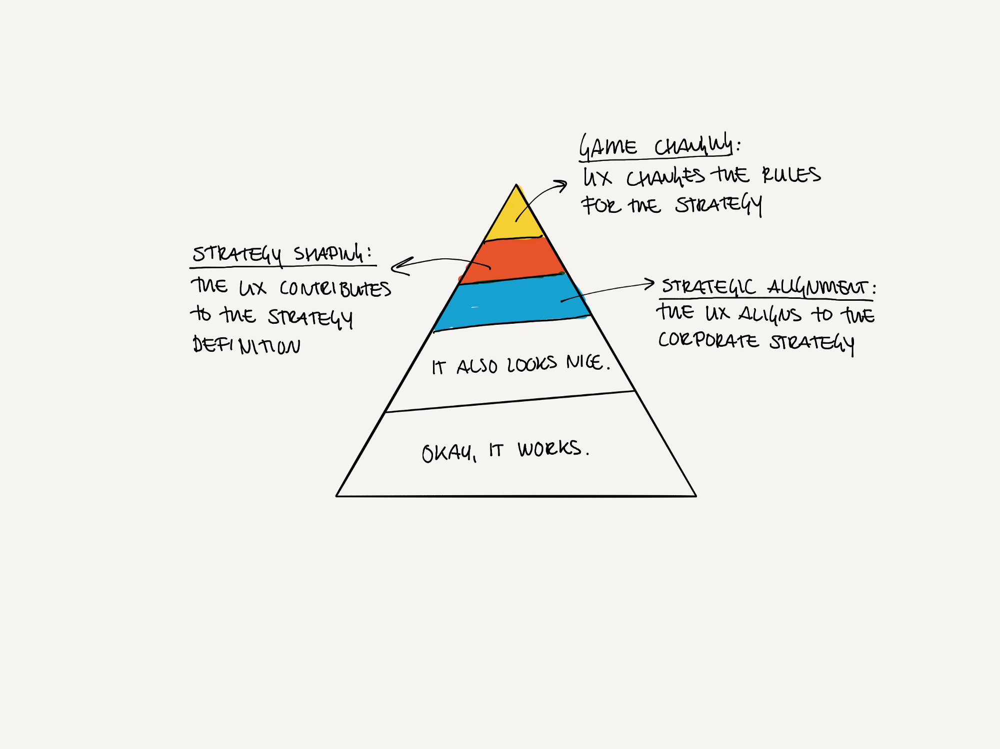
📙 设计案例
趣味又活泼的西北融合菜品牌VI设计
https://mp.weixin.qq.com/s/goXC3tCLicnf5CbxpEFgtA
社会越来越开放，社交的功能也越来越被看重，很多餐饮店在设计的时候，也会格外重视社交属性的打造，比如将餐厅与酒吧相结合的餐酒吧，便是扩大就餐的娱乐体验，增强社交功能。那今天分享的就是一个融合了音乐、旅行、烧烤和酒等的西北融合菜品牌设计，一起来看看！
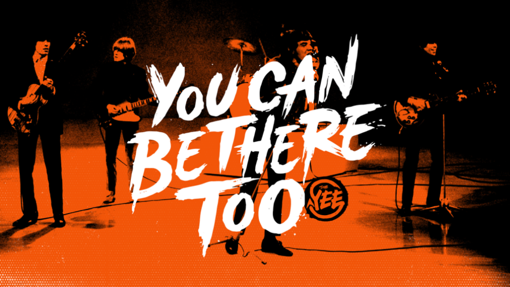
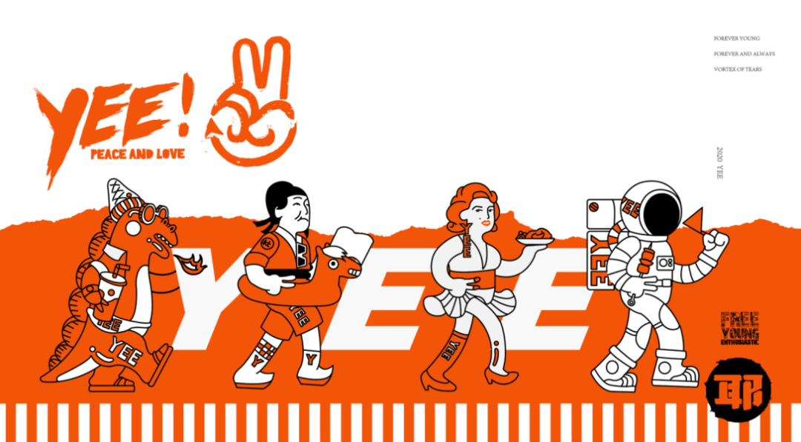
📙 设计灵感
羊驼们接新广告啦，这次……居然是棉签？
https://www.topys.cn/article/31411
人是视觉动物，获取的信息83%来自视觉，但人视觉停留的时间也很短，在最短的时间里表达出商品的特点，让顾客知道这是什么，能干什么用，就是广告人们在苦苦思索的破题之道。
最近，日本的棉花制品公司SANYO就交出了一份有趣的答卷。他们请来了羊驼们为产品站台，让羊驼以不同的形象出镜，介绍出不同棉签产品的特点，特别有趣。
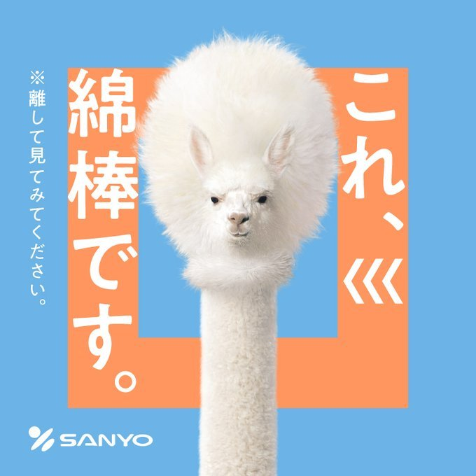
小孩子做起设计来，就没大人什么事儿了
https://www.shejipi.com/522425.html
Maker Mile是一个来自伦敦的专注手工艺术的平台，同时Maker Mile也是一个拥有悠久手工业历史的地方，这里汇聚了许多的画廊、手作人、工作室等。Maker Mile作为一个新品牌，也是一个新平台，他们会去到不同国家的城市，支持当地的手工艺术，将那些工艺艺术品再创新并进行展览展出。
“但愿我们都保留那份小时候的想象力。”
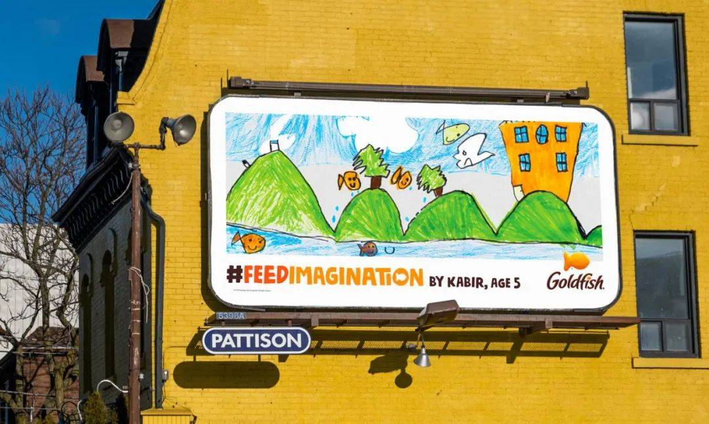